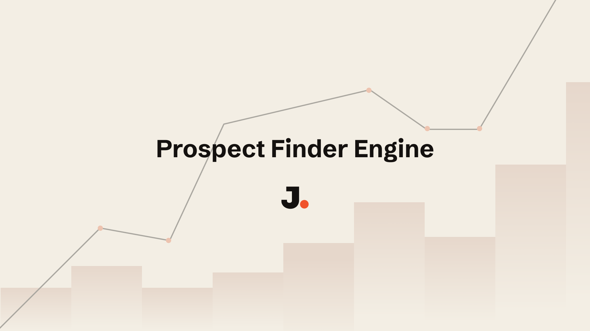
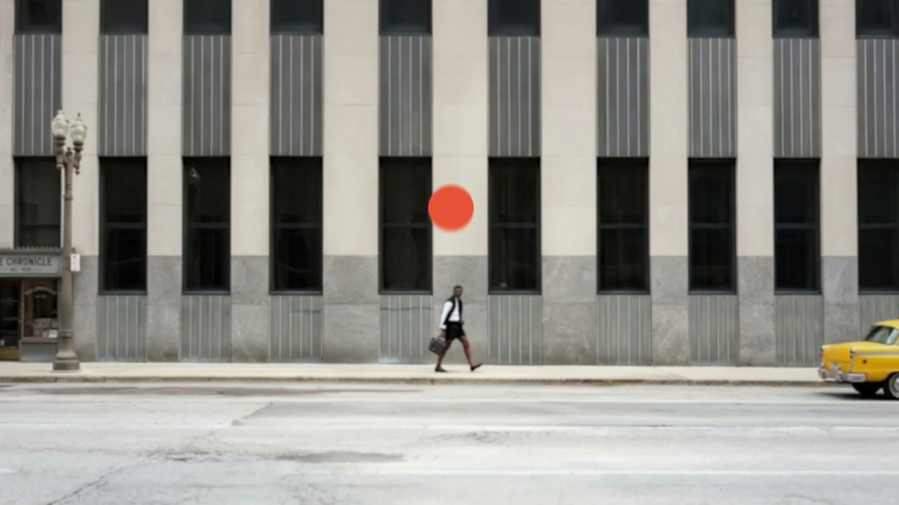
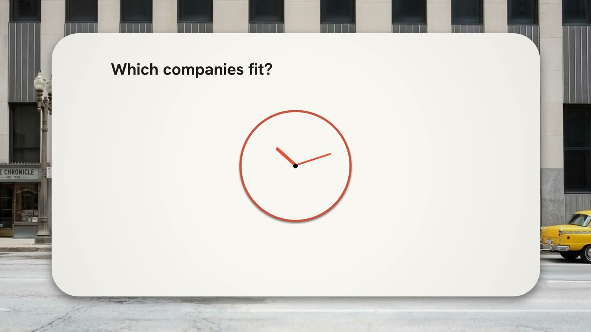
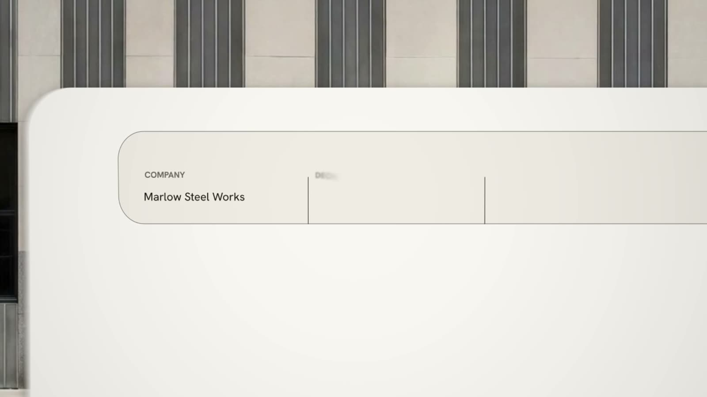
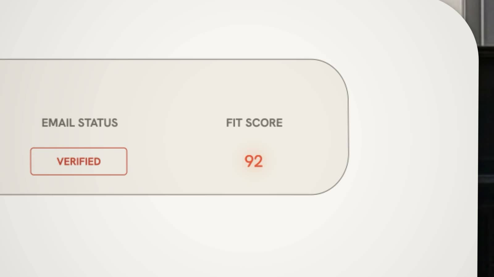
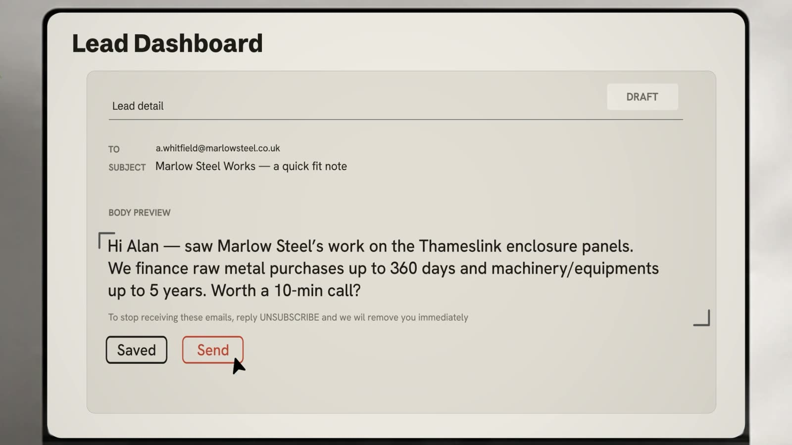
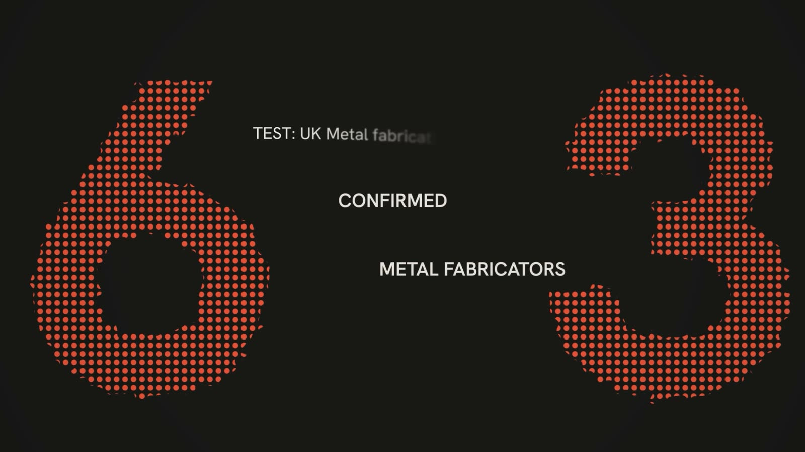
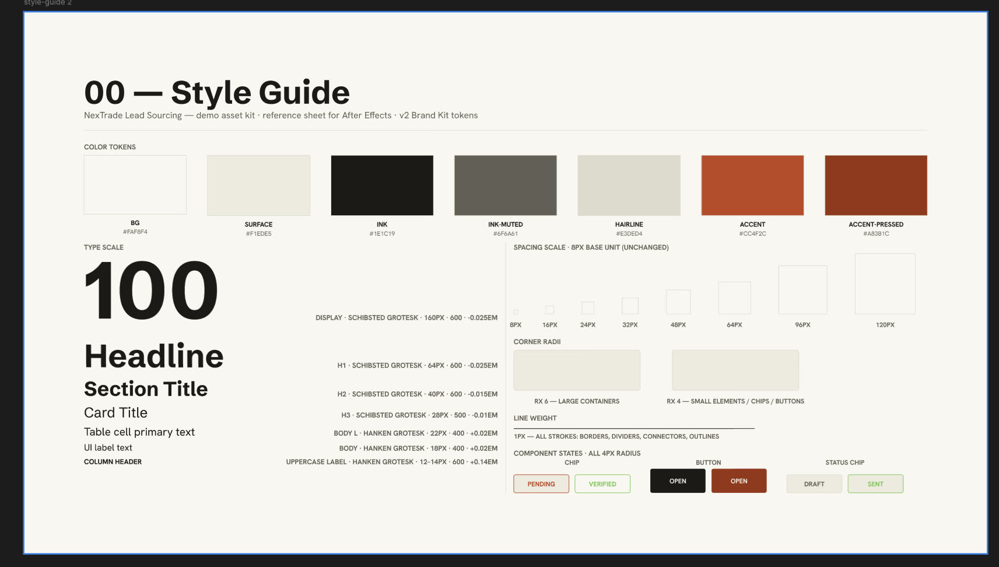
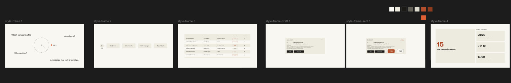

A 58-second explainer for a B2B prospecting system that finds companies, verifies emails and writes each outreach message for that company.

The work
Explain a prospecting system in under a minute: it finds companies, verifies their emails and writes each outreach message for that company. The viewer has to follow the problem and the system without a manual.
Stills






Process
The look was set as a system before animating: tokens, type and components, then every scene laid out as a board.

